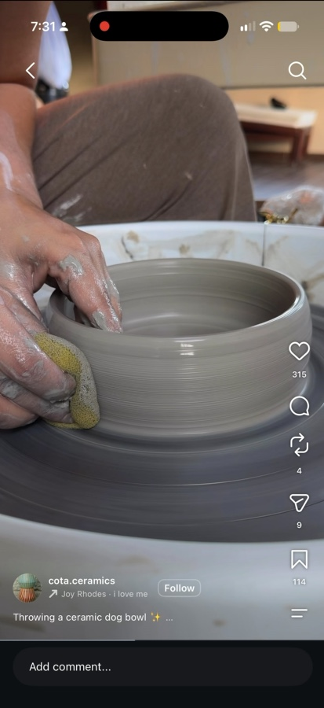
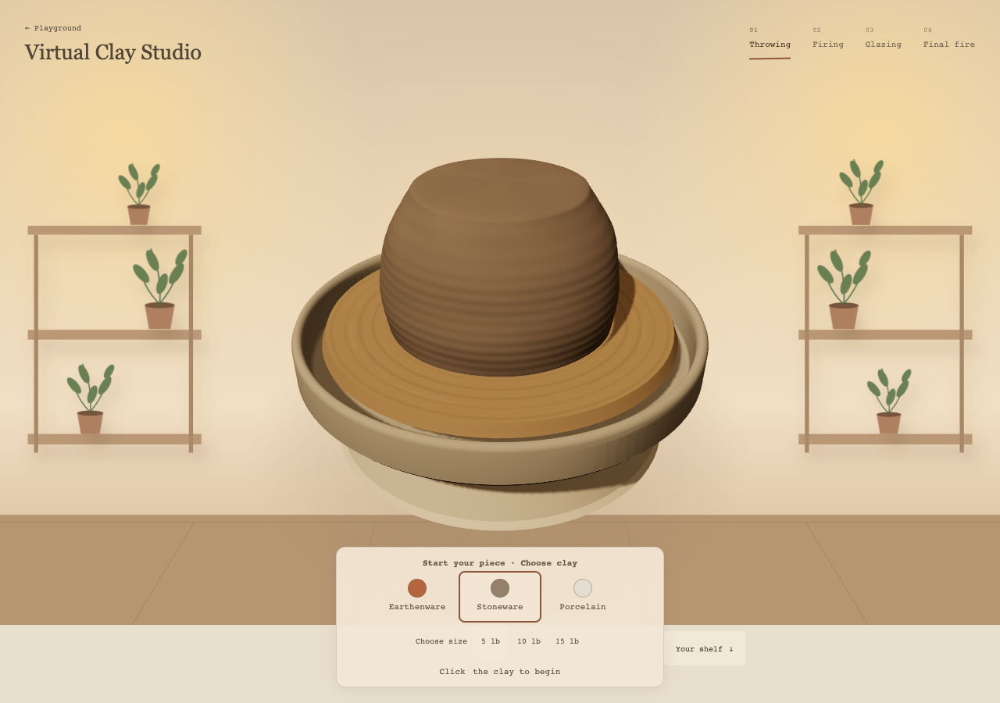
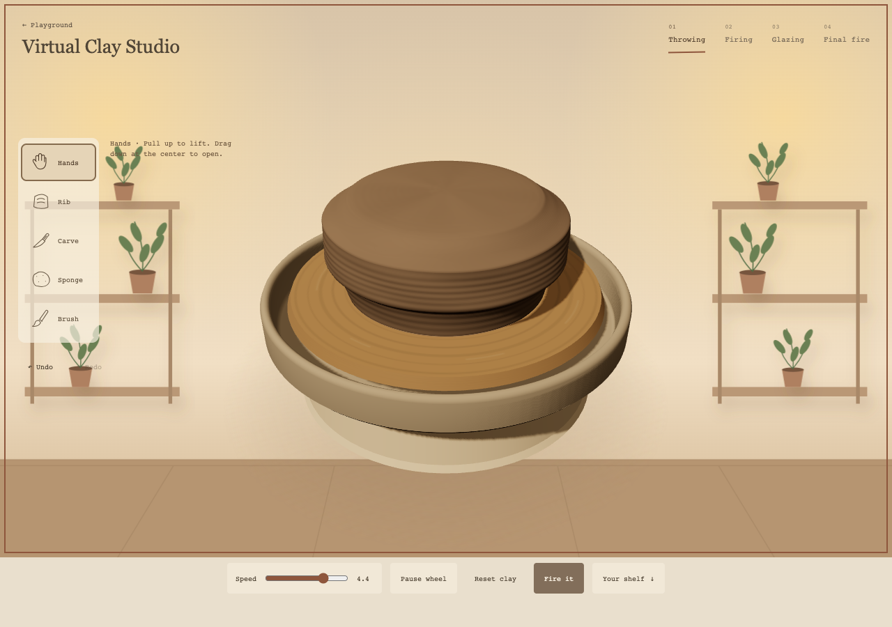
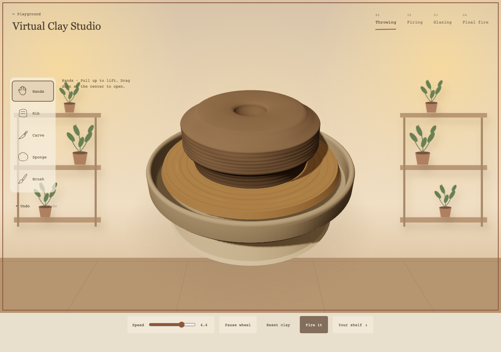
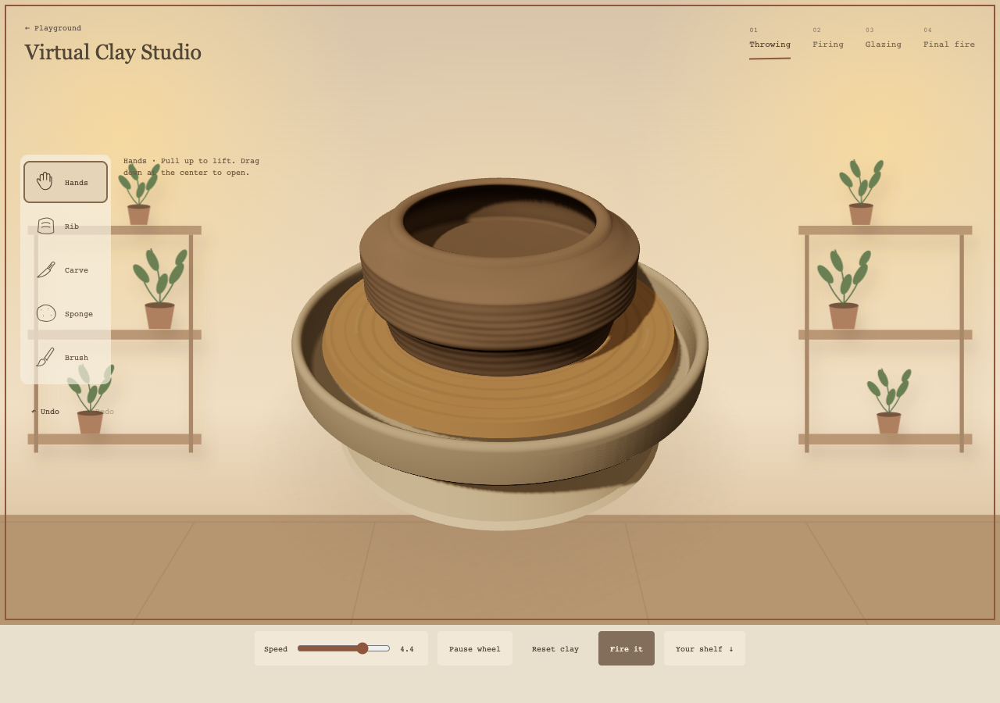

Result: partial resemblance, not a faithful replica. Desktop1280×900; real keyboard Hands controls and pointer opening/finishing gestures. Read-only projection helpers locate contact points. No direct profile edits, presets or geometry shortcuts. No app code changed.

No browser errors. This is one workflow attempt, not proof the shape is impossible. It does show that making a simple reference bowl is not yet straightforward. The hollow is ~.56scene units deep within a1.12-high body; opening radius~.97 versus maximum outside radius~1.42. Those radii are at different heights, not a wall-thickness measurement.



